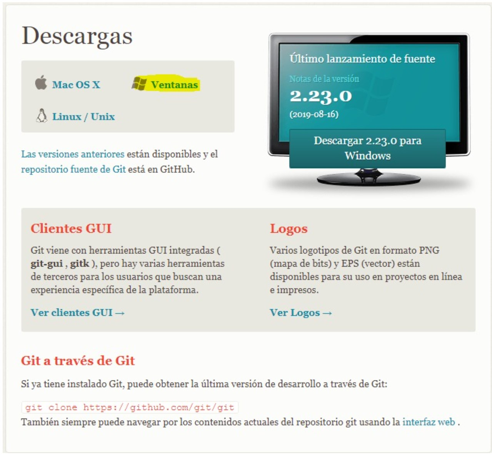
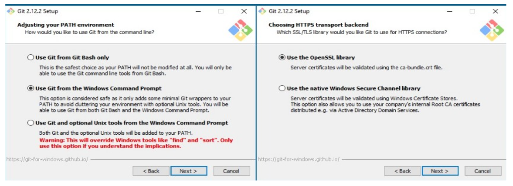

GIT es un sistema de control de versiones creado por Linux Torvalds en el año 2005.
Un sistema de control de versiones es un programa que nos permite almacenar todos todos
los cambios que hagamos a uno o varios archivos, de esta forma podemos tener un registro de todas
las modificaciones que sufran estos archivos y así en caso de algún error poder regresar a una
versión anterior.
Instalación de GIT
Para instalar GIT lo primero que debemos hacer es ir a la página oficial y seleccionaremos la aplicación
de acuerdo a nuestro sistema operativo, en nuestro caso descargaremos la versión para windows, pero también
se puede descargar en MAC OS X, LINUX y SOLARIS.

Imagen 1.1. GIT Instalación. Creación propia.
Una ves descargado ejecutamos el instalador, este nos pedirá permisos de administrador, se los concedemos y nos
aparecerán las siguientes dos ventanas a las cuales damos siguiente:
Imagen 1.2. GIT Instalación. Creación propia.
A continuación, nos pregunta con qué línea de comandos queremos manejar el GIT, podemos elegir GIT Bash,
el CMD de Windows o GIT Bash con algunas características de Windows. En nuestro caso dejaremos el que viene
por defecto y pulsamos siguiente; Enseguida nos pregunta por qué librerías de certificados de seguridad queremos
usar, dándonos dos (2) opciones: Open SSL y las nativas de Windows, seleccionaremos la que deseemos usar y damos
click a siguiente:
